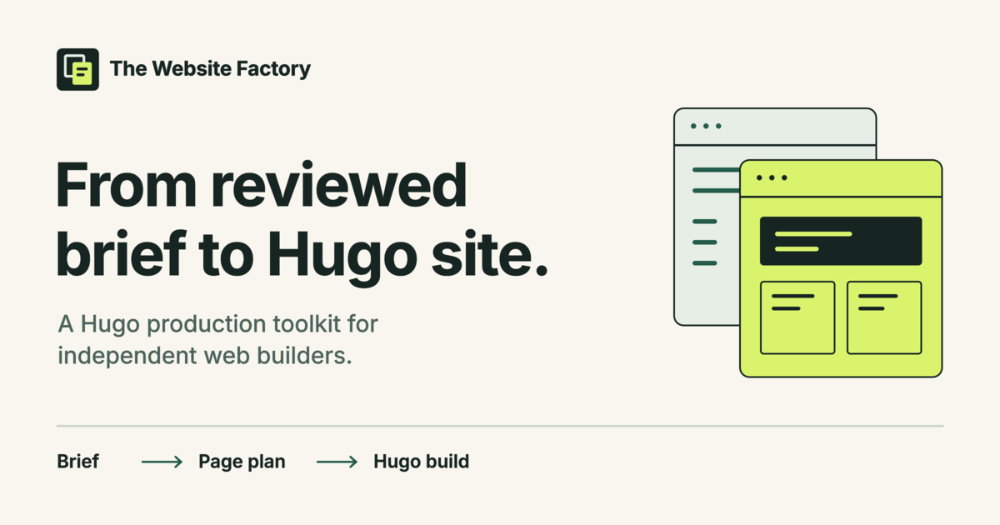
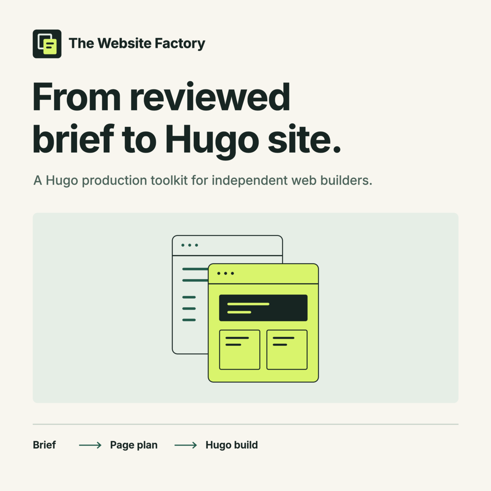

Proposed identity · Brand board
From reviewed brief to Hugo site.
A Hugo production toolkit for independent web builders.
Get share images- Review the brief
- Validate the page plan
- Build the Hugo site
Logos
Use the full lockup for introductions. Use the compact mark for avatars, favicons, and places where the name already appears.
Primary SVGPrimary PNG


Reversed SVGReversed PNG


One-color SVGOne-color PNG


Mark SVGMark PNG


Colors
Paper and Ink carry the message. Lime marks one next action or a focal point. Use Ink on Lime and Pine for links on light surfaces.
- Paper
#F8F6EF - Ink
#172522 - Sage
#E6EEE6 - Lime
#D9F46C - Pine
#245C4C - Muted
#4B6259 - Border
#6F817A - Divider
#C9D4CB - White
#FFFFFF
Typography
Inter keeps headings, instructions, and labels in one family. Reserve system monospace for commands, code, and file names.
Choose a starter. Shape the site.
Review the pages, confirm the facts, and build a separate Hugo project for handoff.
./wf new
Share images
Use the wide card for link previews and the square card for a social post. The SVG sources keep the logo and diagram sharp at larger sizes.

Wide PNGWide SVG source



Square PNGSquare SVG source